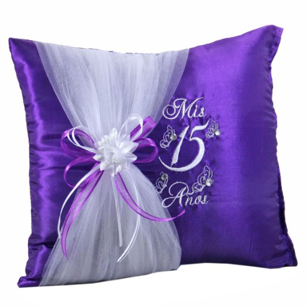
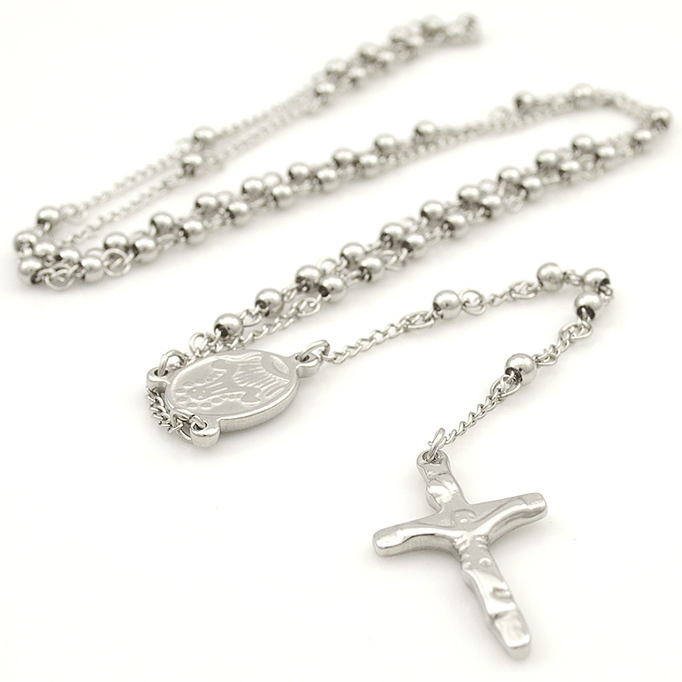

The transition from childhood to womanhood is an important event in almost any culture. Hispanics, however, mark this memorable occasion with the celebration of a Quinceañera or Sweet 15. The Quinceañera tradition is believed to have started many years ago when the Spanish conquerors brought the tradition to Mexico and others say the tradition originated with the Aztecs. Regardless, a Quinceañera celebration is a Hispanic tradition associated with Mexican, central and South American cultures. Through the different ceremonies that take place today, the young Quinceañera is formally introduced to society and it is a day to give thanks for having reached this age.
The coordination of the entire Quinceañera event is a teamwork effort of family, friends and relatives. Very strong family ties come into play. It is customary that all these family, friends and relatives will volunteer to be padrinos or sponsors. Each sponsor takes financial and/or moral responsibility over what they have been assigned including the cake, invitations, doll, bible, rosary, etc.
It is customary that the Quinceañera will wear a ball gown usually with a petticoat or crinolina underneath to make the dress look extra puffy, and a crown or tiara along with her gloves. In the United States the dress is most commonly of white color, while in other countries such as Mexico it is very common to see the Quinceanera wear a pastel color dress or even red, royal blue, or burgundy.
Quinceañera Accessories Usually Include:
The Last Doll is used as part of the ceremony or as decoration and keepsake. The Quinceanera doll represents the last things of a child now that the Quinceañera will focus on the things of a young lady. In some Hispanic cultures, the cápias (printed ribbons with the Quinceañera's name and date) are pinned to the doll, and the Quinceañera circulates among her guests, thanking them for their presence and presenting them with the memento taken from the doll. In another custom, to symbolize leaving childhood things behind,the Quinceañera passes on her Last Doll to a younger sibling.
Kneeling Pillow
At the church ceremony, a special Kneeling Pillow, sometimes personalized with the Quinceañera's name, is placed in position for the young girl to kneel on during the ceremony. And, a touch of elegance is added with smaller decorated Ceremony Pillows for the presentation of the Quinceañera's ceremony gifts, such as the Tiara, the Scepter and the Shoes.
Bible and Rosary
She also receives a patron saint medal, rosary, necklace or Quinceañera Bible to remind her of her foundation in faith.
Tiara/Crown
Many of the traditional gifts presented to the Quinceañera by her parents and her padrinos(Godparents) at her church ceremony are symbols of faith. The tiara placed on her head signifies her standing as a princess in the eyes of God. The Quinceañera earrings remind her to listen to God’s word.The bracelet represents the unbroken nature of God’s love: it is unceasing.
Traditionally
Traditionally, the celebration will usually consist of have fourteen young girls called damas and fourteen young men called chambelanes, in addition to the Quinceañera's own chambelan de honor. Nowadays, Quinceañera's will sometimes choose to have only seven damas and seven chambelans. Quinceañera's can also choose to have only all damas or all chambelanes. Typically the damas will all wear same color and style gowns to coordinate with the Quinceañera gown and the boys wear coordinating tuxedos.
The actual Quinceañera celebration consists of several parts. It is traditional to have a special thanksgiving mass or ceremony, followed by the reception and the banquet, and not to forget the famous Quinceañera waltz or el bals.
After months of practice for the waltz, the moment finally comes during the reception. It is assumed that the Quinceañera prior to this date has not been able to dance with anyone before. It is at this time that the Quinceañera will dance the waltz with her chambelan and accompanied by her damas and other chambelanes. This is a major highlight of the celebration. Other important highlights will follow such as the toast and the cutting of the cake.
Without a doubt the Quinceañera celebration is a major Hispanic tradition where family, friends and relatives will go thru every effort to attend and participate in this celebration.
The entire festivity is full of spiritual and emotional moments, and composed of several events that take place, where God, thanksgiving, food, music and dance are the mix of ingredients for a joyous culmination after months of planning.